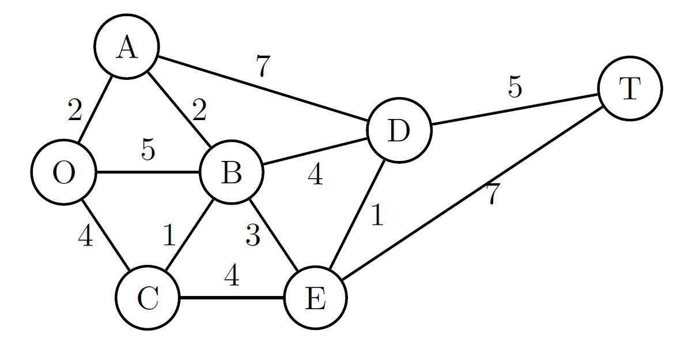
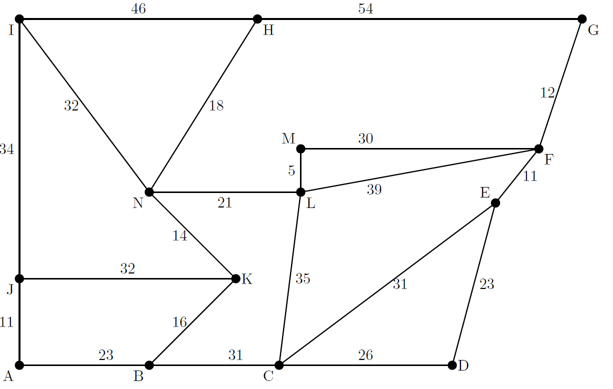
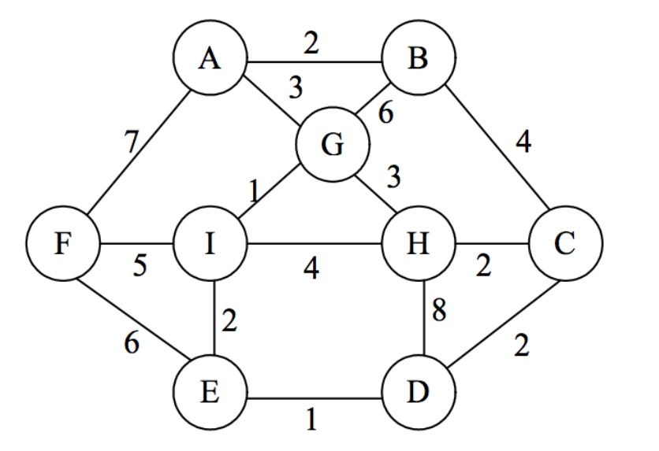

Seervada Park has recently been set aside for a limited amount of sightseeing and backpack
hiking. Cars are not allowed into the park, but there is a narrow, winding road system for
trams and for jeeps driven by the park rangers. This road system is shown in Figure 1,
where location O is the entrance to the park, T is a fantastic scenic overlook, and the other
letters denote ranger stations. The numbers denote the distance in miles between locations.
A small number of trams are available to transport visitors from the entrance to the scenic
overlook and back.
Problem 1
Determine which route from the park entrance O to the scenic overlook T has the shortest distance for the tram operations.
Problem 2
Telephone lines must be installed under the roads to establish communication among all the stations (including O and
T). Because the installation is expensive and disrupts the natural environment, lines will be installed under just enough
roads to provide some connection between every pair of stations. Where should the lines be laid to accomplish this with
a minimum total number of miles of telephone line?

Consider installing a system of underground sprinklers to water the lawn. A sprinkler needs to be placed
at each node in the �gure below. The cost to install a pipe connecting any two nodes is also shown in the
�gure. Every sprinkler needs to be connected to the rest of the sprinklers. What pipes should be installed
in order to minimize the cost?

Imagine points A through I are nine important locations in a town, e.g. police station, hospital, city hall, etc., and that a very heavy snow storm has hit the city.
The distances between locations are shown in the graph below.
What roads should be plowed first to ensure the major city locations are connected via plowed roads?

Try doodling a simple curve that crosses itself a few times.
Can you determine a relationship between the number of intersection points, (V), the number of edges or segements connecting points, E, and the number of regions created (including the outside), F?